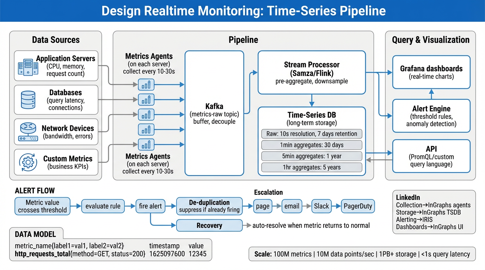

A deep dive into metrics collection, time-series storage, alerting pipelines, and dashboard rendering at scale — ingesting millions of data points per second with sub-second query latency.
A realtime monitoring system observes infrastructure and application health by collecting metrics, storing them in a time-series database, evaluating alerting rules, and rendering dashboards. The four pillars are:
(metric, labels, timestamp, value) tuples with extreme write throughput and compression.| Characteristic | Detail |
|---|---|
| Collection interval | 10–60 seconds per metric |
| Metric cardinality | 100M unique time series |
| Average label count | 5–10 labels per metric |
| Query pattern | Range scans over 1h–7d windows |
| Alert evaluation | Every 15–60 seconds per rule |
| Dashboard refresh | Auto-refresh every 10–30 seconds |
| Retention | Raw: 7d, 1min: 30d, 5min: 1yr, 1hr: 5yr |
The system is organized as a pipeline: data sources emit metrics, agents collect and forward them through a Kafka buffer, stream processors fan out to the time-series database, alerting engine, and dashboard query layer.

/metrics endpointsMetrics follow the metric_name{label=value, ...} timestamp value format. Each unique combination of metric name + label set creates a distinct time series.
http_requests_total{method="GET", handler="/api/users", status="200"} 1681234567 42871
http_requests_total{method="POST", handler="/api/users", status="201"} 1681234567 1203
node_cpu_seconds_total{cpu="0", mode="idle", instance="host-42"} 1681234567 98123.45
Cardinality = product of all label values. A metric with 5 labels, each having 100 unique values, creates 1005 = 10 billion potential time series. Real-world culprits:
| Bad Label | Why It's Dangerous | Fix |
|---|---|---|
user_id | Millions of unique users = millions of series | Use histograms/logs instead |
request_id | Unique per request → unbounded | Never use as a metric label |
email | PII + unbounded cardinality | Use aggregated cohorts |
url_path (raw) | /users/123 vs /users/456 → explosion | Use route templates: /users/:id |
Rule of thumb: Keep total active series under 10M per TSDB node. Monitor prometheus_tsdb_head_series as a meta-metric.
| Type | Behavior | Example | Query Pattern |
|---|---|---|---|
| Counter | Monotonically increasing; resets on restart | http_requests_total |
rate(http_requests_total[5m]) → req/sec |
| Gauge | Goes up and down; snapshot of current state | node_memory_available_bytes |
Direct value or avg_over_time(...[1h]) |
| Histogram | Client-side bucketed distribution; cumulative counters per bucket | http_request_duration_seconds_bucket{le="0.5"} |
histogram_quantile(0.99, rate(...)) |
| Summary | Client-side calculated quantiles; not aggregatable across instances | rpc_duration_seconds{quantile="0.99"} |
Direct read; cannot be re-aggregated |
Prefer Histograms in almost all cases. Histograms are aggregatable across instances (you can compute a global p99 from multiple servers). Summaries are pre-computed on the client and cannot be combined — the p99 of p99s is not the global p99.
Use Summaries only when you need exact quantiles from a single instance and cannot afford the bucket explosion (e.g., a batch job reporting its own latency percentiles).
Time-series data has a unique access pattern: write-once, read-rarely, always in order. This allows extreme optimization compared to general-purpose databases.
job="apiserver").Facebook's Gorilla paper (2015) showed that time-series data compresses to 1.37 bytes per sample using two techniques:
Metrics arrive at regular intervals (e.g., every 15s). Instead of storing the full 64-bit timestamp:
t₁ = 1681234500 t₂ = 1681234515 → Δ = 15 t₃ = 1681234530 → Δ = 15 → ΔΔ = 0 t₄ = 1681234545 → Δ = 15 → ΔΔ = 0 t₅ = 1681234561 → Δ = 16 → ΔΔ = 1
Most ΔΔ values are 0 (1 bit) or very small (few bits). Compresses 64-bit timestamps to ~1–4 bits each.
Consecutive metric values tend to be similar (e.g., CPU at 42.3%, 42.1%, 42.4%). XOR of consecutive IEEE 754 floats yields mostly zeros:
v₁ = 42.3 (IEEE 754 bits)
v₂ = 42.1 → XOR(v₁,v₂) = 00...0101
v₃ = 42.4 → XOR(v₂,v₃) = 00...0011
Leading and trailing zeros are run-length encoded. Average: ~0.37 bytes per value.
| Encoding | Raw Size | Compressed | Ratio |
|---|---|---|---|
| Timestamp (64-bit) | 8 bytes | ~0.5 bytes (ΔΔ) | 16:1 |
| Value (64-bit float) | 8 bytes | ~0.87 bytes (XOR) | 9:1 |
| Total per sample | 16 bytes | ~1.37 bytes | 12:1 |
Raw data cannot be stored forever. Downsampling progressively reduces resolution while keeping long-term trends queryable.
| Tier | Resolution | Retention | Storage Estimate |
|---|---|---|---|
| Raw | 15-second samples | 7 days | ~8 TB |
| 1-minute rollup | min/max/avg/count per minute | 30 days | ~5 TB |
| 5-minute rollup | min/max/avg/count per 5 min | 1 year | ~10 TB |
| 1-hour rollup | min/max/avg/count per hour | 5 years | ~4 TB |
A background compaction job reads raw chunks and produces rollup chunks. For each window (e.g., 1 minute), it computes:
Storing all four aggregates (not just avg) is critical. avg(avg(x)) is mathematically incorrect for unequal group sizes; storing sum + count allows correct re-aggregation.
alert: HighErrorRate
expr: rate(http_errors_total[5m])
/ rate(http_requests_total[5m])
> 0.05
for: 5m
labels:
severity: critical
annotations:
summary: "Error rate above 5%"
More adaptive but harder to debug. Engineers distrust "the model said so" without explainability.
┌───────────┐
rule matches ───→│ PENDING │──── "for" duration elapsed ────→ FIRING
└───────────┘ │
↑ │
rule stops ◄─── resolved ◄──── condition clears ─┘
matching
The for clause prevents flapping: a condition must persist for N minutes before transitioning from PENDING to FIRING.
| Stage | Delay | Channel | Example |
|---|---|---|---|
| 1. Immediate | 0 min | Slack channel | #sre-alerts |
| 2. Acknowledge | 5 min (if no ACK) | PagerDuty page | Primary on-call phone alert |
| 3. Escalate | 15 min (if no ACK) | Email + secondary page | Secondary on-call + manager |
| 4. War Room | 30 min (if unresolved) | Incident bridge | Auto-create Zoom + Slack thread |
alertname and cluster labels are grouped into a single notification. Instead of 500 "PodCrashLooping" alerts, the on-call sees "PodCrashLooping: 500 instances in cluster prod-ltx1-k8s-7".Alert fatigue kills monitoring effectiveness. When on-call engineers receive 200+ alerts/day, they start ignoring all of them. Prevention strategies:
| Strategy | How It Helps |
|---|---|
| Actionable alerts only | Every alert must have a clear runbook or action. If no one can act on it, delete the rule. |
| SLO-based alerting | Alert on error budget burn rate, not individual failures. A single 500 error isn't critical; burning 10% of monthly error budget in 1 hour is. |
| Symptom vs cause | Alert on user-facing symptoms ("p99 latency > 500ms") not causes ("CPU > 80%"). One symptom alert replaces dozens of cause alerts. |
| Regular alert reviews | Monthly review: delete alerts that fired but required no action. Track signal-to-noise ratio. |
| Tiered severity | Only critical pages. warning goes to Slack. info goes to dashboard only. |
LinkedIn operates one of the largest internal monitoring systems in the industry. Here's how the generic components map to LinkedIn's infrastructure:
| Generic Component | LinkedIn Implementation | Notes |
|---|---|---|
| Metrics Agent | InGraphs Agent | Runs on every host; collects JMX, system, and custom metrics; pushes to Kafka |
| Message Buffer | Kafka | LinkedIn invented Kafka — used as the durable transport layer for all metrics |
| Stream Processor | Samza | Pre-aggregation, label enrichment, fan-out to TSDB and alerting |
| Time-Series Database | InGraphs TSDB | Custom-built time-series store optimized for LinkedIn's scale; handles 100M+ active series |
| Alerting Engine | IRIS | Threshold-based alerting with escalation plans, on-call rotation integration, and PagerDuty/Slack routing |
| Dashboards | InGraphs UI | Internal dashboard platform for visualizing metrics, creating charts, and sharing views across teams |
user_id as a metric label — what happens?| Question | Key Point |
|---|---|
| Why Kafka between agents and TSDB? | Decouples producers from consumers; absorbs ingest spikes; enables replay and multiple consumers (TSDB + alerting + analytics) |
| Counter vs Gauge? | Counter only goes up (use rate() to get per-second). Gauge goes up and down (read directly). |
| Why not store metrics in PostgreSQL? | Write amplification from B-tree index updates kills throughput. TSDB uses append-only + LSM for 10–100× better write performance. |
| How to handle cross-DC queries? | Global query layer fans out to per-DC TSDB instances, merges results. Use query-frontend with caching for repeated dashboard loads. |
| What is recording rule? | Pre-computed query results stored as new time series. Avoids expensive repeated computation during dashboard loads. |